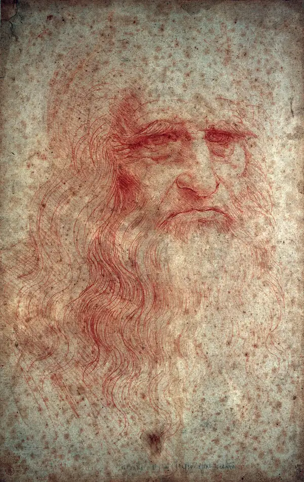

10 Famous Artworks by Leonardo da Vinci
| 1) Mona Lisa (c.1503-19) |

The world’s most famous artwork, the Mona Lisa draws thousands of visitors to the Louvre Museum each day,
many of whom are compelled by the sitter’s mysterious gaze and enigmatic smile. The seemingly ordinary
portrait
of a young woman dressed modestly in a thin veil, somber colors, and no jewelry might also confound its
viewers,
who may wonder what all the fuss is about. The painting’s simplicity belies Leonardo’s talent for realism.
The subject’s softly modeled face shows his skillful handling of sfumato, an artistic technique that uses subtle
gradations
of light and shadow, rather than line, to model form. The delicately painted veil, the finely wrought
tresses, and the
careful rendering of folded fabric reveal Leonardo’s tireless patience in recreating his studied
observations.
|
| 2) Last Supper (c. 1495–98) |

One of the most famous paintings in the world, the Last Supper was commissioned by Ludovico Sforza, duke of
Milan and
Leonardo’s patron during his first stay in that city, for the Dominican monastery of Santa Maria
delle Grazie. Depicting a
sequential narrative, Leonardo illustrates several closely connected moments in the
Gospels, including Matthew 26:21–28,
in which Jesus declares that one of the Apostles will betray him and then
institutes the Eucharist. Leonardo, who was intrigued
by the manner in which a man’s character can reveal itself
in posture, expression, and gesture, depicted each disciple’s unique
reaction to the declaration. The Apostles’
postures rise, fall, extend, and intertwine as they appear to whisper, yell, grieve,
and debate around Jesus,
who sits serenely in the center.
|
| 3) Vitruvian Man (c. 1490) |

Leonardo’s pen-and-ink drawing Vitruvian Man comes from one of the many notebooks that he kept on hand during
his mature years.
It is accompanied by notes, written in mirror script, on the ideal human proportions that the
Roman architect Vitruvius laid out in a
book on architecture from the 1st century BCE. The drawing illustrates
Vitruvius’s theory that the ideal human could fit within a
circle and a square, two irreconcilable shapes.
Leonardo resolved the concept by drawing a male figure in two superimposed
positions—one with his arms outstretched
to fit in a square and another with his legs and arms spread in a circle. The work shows
not only Leonardo’s effort
to understand significant texts but also his desire to expand on them. He was not the first to illustrate
Vitruvius’s concepts, but his drawing later became the most iconic, partly because its combination of mathematics,
philosophy,
and art seemed a fitting symbol of the Renaissance. The drawing is now housed in the Gallerie dell’
Accademia, Venice, where
it is not typically on display but kept in a climate-controlled archive.
|
| 4) Self Portrait (c. 1490/1515–16) |

Long regarded as a self-portrait, the red chalk drawing of an old man with long wavy hair and a beard has
been reproduced to
such an extent that it defines how most people think of Leonardo’s appearance. Yet some
scholars argue that the figure, with its
craggy features, furrowed brow, and downcast eyes, appears much older
than the age Leonardo ever reached; Leonardo died
at age 67. They propose that the drawing may be one of his
grotesque drawings, sketches he habitually made in his notebooks
of people with eccentric features. Whomever
the portrait represents, it is a departure from Leonardo’s often captivating subjects,
yet he managed to imbue
the figure with the nobility and wisdom of a mature age.
|
| 5) The Virgin of the Rocks (c. 1483–86) |
Based on stylistic evidence, many scholars consider the painting The Virgin of the Rocks in the Louvre the
first of two paintings
that Leonard made of an apocryphal legend in which the Holy Family meets Saint John
the Baptist as they flee to Egypt from Herod’s
Massacre of the Innocents. Leonardo was involved in years of
litigation with the Confraternity of the Immaculate Conception, which
commissioned the work, and the dispute
eventually led Leonardo to paint another version of the subject about 1508, which is now
housed in the National
Gallery of London.
|
| 6) Head of a Woman (1500–10) |

Head of a Woman, a small brush drawing with pigment, depicts a young woman with her head tilted and her
eyes downcast.
Her posture recalls the Virgin Mary in Leonardo’s The Virgin of the Rocks, suggesting that
the drawing may have served as a
model. The drawing’s nickname, La scapigliata, translates to “disheveled”
and refers to the young woman’s wayward strands
of hair. The loosely sketched tendrils and shoulders
contrast with the highly finished face, where Leonardo gently modeled the
woman’s delicate features,
from her heavy eyelids to her tender lips. It reveals Leonardo’s fluid means of working, utilizing both
expressive drawing to create form and controlled layering to provide detail.
|
| 7) Lady with an Ermine (c. 1489–91) |
Many art historians identify the youthful woman in Lady with an Ermine as Cecilia Gallerani, the
mistress of Leonardo’s patron,
Ludovico Sforza, duke of Milan. The ermine was often used as an emblem for
the duke. The woman turns her head to the right, her
bright eyes seemingly directed toward something outside
the frame. Although the painting has been heavily overpainted, notably
the dark background, it nonetheless
reveals Leonardo’s knowledge of anatomy and his ability to represent character in posture and
expression.
He captures the girl’s youth and genial nature in her guileless features, attentive gaze, and tender embrace
of the ermine,
which sits with its head cocked regally and alert. Her slender hand reveals the complicated
bone structure beneath the skin, just as the
head of the ermine suggests the skull underneath the finely
rendered fur.
|
| 8) Salvator Mundi (c. 1500) |
The head-on portrait of Salvator Mundi (c. 1500; “Savior of the World”) made headlines in 2017 when it sold
for a record-breaking
$450.3 million at auction. The high price was all the more surprising when considering
that Salvator Mundi was in poor condition,
it had a questionable history, and its attribution was a subject
of debate among scholars and critics. Many pundits remarked on the
poor skill used to represent Jesus’ face;
the stiff posture, which was so unlike the Renaissance master’s characteristic twisting poses;
and the
unconvincing representation of the glass globe, which, if solid, would have reflected a distorted view of
its holder, an optical
trick that Leonardo would have known about. Christie’s, the auction house that managed
the sale, dismissed the criticisms, noting
that any lack of craft was the result of heavy restoration in
previous centuries and pointed to the soft modeling of Jesus’ right hand
and the finesse of his tight curls,
both characteristics that resembled Leonardo’s technique.
|